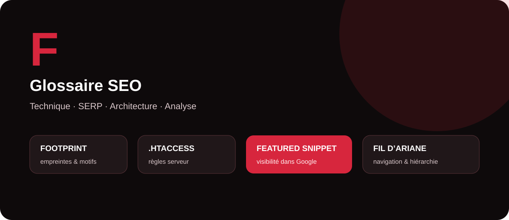

Le référencement naturel combine des dimensions techniques, éditoriales et structurelles. Certains termes désignent des fichiers de configuration, d’autres des formats de résultats Google ou des éléments de navigation. Ce guide MinoSeo explique les principales notions SEO commençant par la lettre F avec une approche professionnelle, concrète et accessible.

Footprint
En SEO, un footprint est une empreinte ou un motif récurrent permettant d’identifier un ensemble de pages, de sites ou de configurations partageant certaines caractéristiques. Il peut s’agir d’une structure d’URL, d’un texte de pied de page, d’un CMS, d’une balise, d’une adresse technique ou d’un modèle de liens.
Les footprints sont utiles pour l’analyse concurrentielle, les audits à grande échelle et la recherche de tendances. Ils peuvent par exemple aider à repérer des sites utilisant une même technologie ou des pages présentant une structure similaire. En netlinking, la notion doit être maniée avec prudence : un profil artificiellement répétitif peut laisser des schémas facilement identifiables.
Fichier .htaccess
Le fichier .htaccess est un fichier de configuration utilisé notamment par les serveurs web Apache. Lorsqu’il est autorisé par l’hébergement, il permet d’appliquer des règles à un répertoire et à ses sous-répertoires sans modifier directement la configuration principale du serveur.
En SEO technique, il est fréquemment utilisé pour mettre en place des redirections permanentes, forcer HTTPS, harmoniser certaines variantes d’URL, réécrire des chemins ou gérer des comportements serveur. Une redirection 301 bien configurée est par exemple utile lors d’une migration ou d’un changement d’URL.
Ce fichier est puissant : une erreur de syntaxe peut rendre une partie du site inaccessible ou provoquer des boucles de redirection. Toute modification doit donc être sauvegardée, testée et contrôlée après déploiement. Les sites fonctionnant avec Nginx ou d’autres serveurs utilisent des mécanismes de configuration différents.
Featured snippet
Un Featured Snippet, souvent appelé « extrait optimisé » ou « position zéro », est un bloc spécial que Google peut afficher au-dessus ou à proximité des résultats classiques pour répondre directement à une requête. Il peut prendre la forme d’un paragraphe, d’une liste, d’un tableau ou d’un autre extrait de contenu.
Il n’existe pas de balise permettant d’imposer à Google l’affichage d’une page en Featured Snippet : les systèmes de Google déterminent automatiquement si un contenu constitue une bonne réponse pour la requête. Pour augmenter ses chances, il est utile de répondre clairement à la question, de structurer les informations avec des titres explicites et d’utiliser des listes ou tableaux lorsqu’ils améliorent réellement la compréhension.
Le Featured Snippet peut renforcer la visibilité et la crédibilité perçue d’un site, mais sa présence n’est jamais garantie. La priorité reste donc de produire la meilleure réponse possible pour l’utilisateur plutôt que d’écrire uniquement pour obtenir ce format.
Fil d’Ariane
Le fil d’Ariane — ou breadcrumb — est un élément de navigation qui indique la position d’une page dans la hiérarchie du site. Un parcours peut par exemple prendre la forme : Accueil › Glossaire SEO › Lettre F. Il permet à l’utilisateur de comprendre immédiatement où il se trouve et de remonter facilement vers une catégorie supérieure.
Pour le SEO, le fil d’Ariane contribue à rendre l’architecture plus lisible et crée des liens internes contextuels entre les niveaux du site. Google peut également exploiter un balisage structuré BreadcrumbList pour mieux comprendre cette hiérarchie et présenter un chemin dans les résultats de recherche.
Un bon fil d’Ariane doit refléter un parcours logique pour l’utilisateur. Il ne doit pas être ajouté uniquement pour multiplier les liens ou répéter mécaniquement la structure technique des URL.
Synthèse : les notions SEO en F
| Terme | Catégorie | Utilité principale |
|---|---|---|
| Footprint | Analyse SEO | Identifier des motifs et caractéristiques récurrents. |
| Fichier .htaccess | SEO technique | Configurer redirections et règles serveur sur Apache. |
| Featured Snippet | SERP / contenu | Obtenir une visibilité renforcée grâce à une réponse directement mise en avant par Google. |
| Fil d’Ariane | Architecture / UX | Clarifier la hiérarchie et faciliter la navigation interne. |
Pourquoi maîtriser ces notions ?
Ces quatre termes montrent que le SEO repose sur plusieurs niveaux complémentaires. Le footprint aide à analyser, le .htaccess intervient dans la configuration technique, le Featured Snippet concerne la présentation dans les résultats et le fil d’Ariane améliore la compréhension de l’architecture.
MinoSeo accompagne les entreprises en SEO et GEO depuis plus de 15 ans pour transformer ces concepts en actions concrètes : audit technique, optimisation des contenus, architecture du site, netlinking et amélioration de la visibilité dans les moteurs de recherche et les environnements IA.
Besoin de renforcer votre visibilité SEO et GEO ?
MinoSeo analyse votre site, son architecture, ses contenus et ses signaux techniques pour identifier les optimisations prioritaires.
Demander un audit gratuit